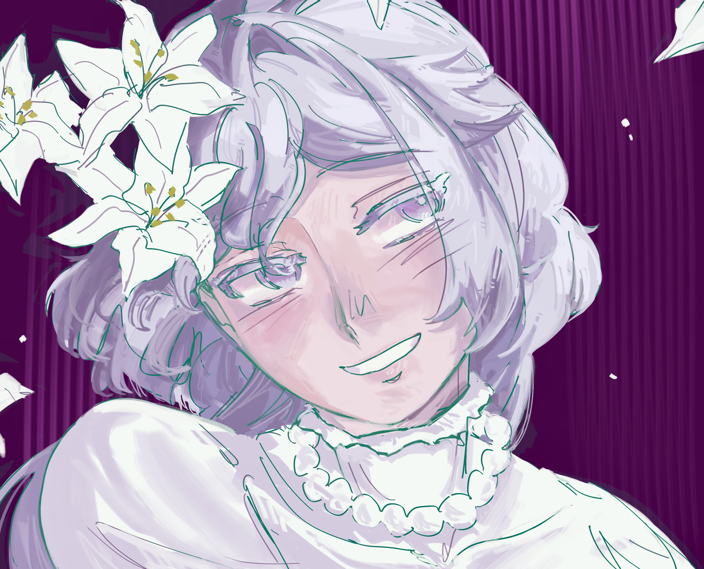
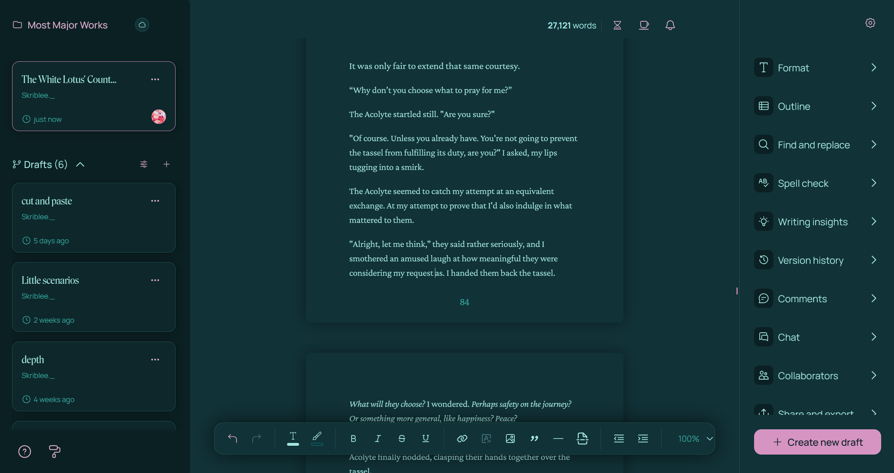
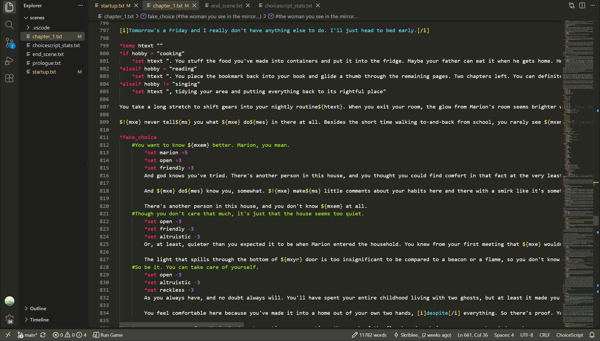

Hobbies

Drawing
This is my main hobby! I draw a lot of my original characters (aka: OCs) in all sorts of different mediums, though I'm the most comfortable with digital art! I also like to work with acrylics and basic pencil-paper sketches too, however!

Writing
I like to write things! Once again, mainly about my OCs and their stories. Some generes I like are romantasy or urban fantasy. Really I just like settings with supernatural things in it. I also like stories that have complex magic systems and divinity interacting with humanity, so you're likely to find things like that in my works!

Game Developing
I enjoy visual novel or interactive fiction games, and I like to work on them in my free time! I use Ren'Py for visual novels, though I'm looking into switching to Godot and Ink soon! For interactive fiction, I've been working with Choicescript, though Twine is a web-based framework for interactive fiction, so you can pretty it up using CSS and JavaScript like a website! Much harder to work with though, so I'm sticking with Choicescript until I get all my writing set up and done.